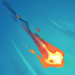

核心裝備
- 魔劍正宗
 三相之力
三相之力 席利妲咒怨
席利妲咒怨 磁性雷射槍
磁性雷射槍 精進之矛
精進之矛
以下為本站 7.2d 校正後的標準配置；實戰仍需依敵方陣容調整。


技能優先：Q > W > E
技能命中敵方英雄，或使用激灼龍息擊殺敵人時獲得層數；層數會強化史矛德的基礎技能。

對目標吐出龍焰並套用命中特效；擊殺目標會返還魔力。龍性精通達到 25／100／175 層時依序獲得範圍傷害、後方爆炸、真傷燃燒與處決。
朝指定方向打出火焰噴嚏，傷害並緩速命中的敵人；命中英雄後會產生爆炸，可用於穿兵消耗與堆層。
短時間提高跑速、無視地形並自動轟擊範圍內低生命敵人；同時擴大視野，是主要自保與穿牆技能。
召喚母親從空中噴火，對大範圍敵人造成傷害；中心傷害更高並附帶緩速，史矛德被命中時還會回復生命。
2技穿兵消耗 → 普攻補傷害 → 1技尾刀／命中
二技穿過兵線命中英雄可安全拿層數，再用普攻與一技收尾。不要為了追第二輪技能交掉三技。
1技消耗 → 普攻 → 3技穿牆拉開 → 2技回頭緩速
先打一技與普攻，敵方準備反撲時用三技穿牆或拉開，再以二技阻止追擊。三技不應單純拿來補傷害。
4技中心壓血 → 2技緩速 → 1技輸出 → 穿插普攻 → 1技斬殺
大絕在團戰開始時施放，利用中心緩速與回血建立輸出空間；175 層後持續用一技觸發燃燒和處決，不必冒險越過前排。
史矛德前期以累積龍性精通為第一目標：用一技尾刀、技能命中英雄都能取得層數。二技可穿過兵線消耗對手並觸發爆炸，但不要為了多疊一層走進強開範圍；三技是主要穿牆與撤退手段，敵方打野位置不明時務必保留。
達到 25 層後一技開始造成範圍傷害，100 層後會在目標後方引發額外爆炸。魔劍正宗、三相之力與席利妲咒怨成形後，先在物件團外圍以一技和二技壓低血量；大絕可在開戰初期提供大範圍傷害、中心緩速與自我治療。
175 層後一技會附加真實傷害燃燒並處決低生命敵方英雄。團戰保持在前排後方，以磁性雷射槍延伸一技消耗範圍，優先攻擊能安全命中的目標；三技保留穿牆避開刺客，活著反覆施放一技比冒險追擊更重要。
對局名單是本站依英雄機制與目前配置整理的參考，不等同固定勝率。
先照標準出裝與符文走；只有敵方陣容真的形成威脅時，再替換必要格子。
觸發：敵方至少有 2 名高生命／高護甲前排，而且團戰多數時間必須先處理前排。
標準配置已經有足夠打坦能力；如果已有斷切、百分比穿透或殞落，就不要為了「坦克多」硬拆暴擊／攻速核心。
觸發：敵方有多名能直接貼到後排的刺客／爆發英雄，或你常在開始輸出前就被秒。
守護天使提供物防與復活，適合把最後一個純輸出位換成容錯。
魔提斯深淵提供魔防與低血量魔法護盾，比單純增加輸出更能保住進場或持續輸出。
骨甲直接降低同一名敵人接續幾次技能或普攻的傷害。
觸發：敵方有多個硬控，而且控制鏈會讓你直接失去輸出時間。
先購買水銀飾帶取得主動解控，之後再合成水星彎刀；水銀飾帶是合成組件，不是另一件要與水星彎刀互換的成裝。
犧牲部分輸出型傳奇符文，換取韌性與緩速抗性。
提醒：水星彎刀的路線是先購買水銀飾帶，再完成水星彎刀；水銀飾帶不是另一件終局成裝。
觸發：敵方有多名高治療／高吸血英雄，或核心前排能在團戰中大量回血。
致死宣告兼顧暴擊、穿透與重創，適合射手在不拆核心輸出邏輯下補反治療。
觸發：敵方有多個大量護盾來源，而且己方沒有其他更適合負責反護盾的英雄。
巨蛇鋒牙降低敵方護盾，只有護盾真的成為團戰主要問題時才值得犧牲一般輸出位。
提醒：反護盾裝通常是彈性位，不要只因敵方有一個小護盾就固定購買。
7.2a 飛龍路第三批正式攻略：技能名稱與核心機制依 Riot Games 台灣《激鬥峽谷》史矛德英雄頁校正；目前 25／100／175 層進化門檻、出裝、符文與實戰方向交叉參考 WildRiftFire Patch 7.2a 後整合。Tier 維持本站既有飛龍路評級。｜v67：套用吉茵珂絲 v64 固定母版。｜v76 第二階段：新增 3 位合適輔助與搭配理由，並完成攻略內容欄位驗收。
本站於 2026-08-27 依 Patch 7.2d 重新檢查此配置。 Tier、出裝、符文與對局屬於 Wild Rift Guide 的整理與分析，不是 Riot Games 官方推薦；版本改動後會再依官方公告與實戰資料校正。